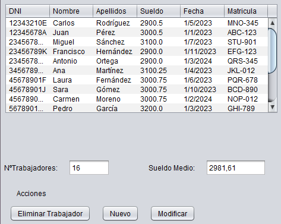
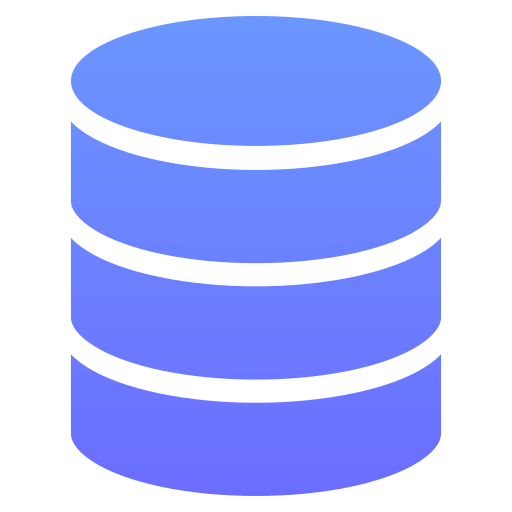
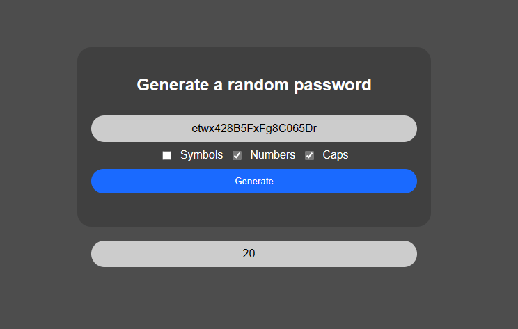

Bienvenido
Proyectos
Identificador de clases
31/03/2024
 VS Code
VS Code
 HTML
HTML
 CSS
CSS
 Javascript
Javascript
Aplicación web enfocada a generar números aleatorios basados en un
input del usuario. Los números generados se muestran en una
cuadrícula con un color basado en su número.
Me ha servido para aprender selección de clase, iteración de las mismas y manipulación del DOM.
Me ha servido para aprender selección de clase, iteración de las mismas y manipulación del DOM.
Aplicación Base de Datos CRUD
19/12/2023
 IntelliJ
IntelliJ
 Java
Java

Aplicación de escritorio enfocada a manejar una Base de Datos de
una sola tabla con las operaciones CRUD. Además de incluir
calculos adicionales como el número total de entidades o un sueldo
medio.
Me ha servido para aprender conexiones a BD en Java, además de vincular el front-end con el back-end.
Me ha servido para aprender conexiones a BD en Java, además de vincular el front-end con el back-end.

MySQL
Generador de Contraseñas
10/04/2024
VS Code
HTML
CSS
Javascript

Aplicación web enfocada en generar una contraseña de carácter
aleatorio. Regido por unos requisitos seleccionables a través de
unas opciones que varian la contraseña generado (símbolos,
números, mayúsculas)
Me ha servido para práctica del lenguaje JavaScript, manipulación del DOM y control de Errores.
Me ha servido para práctica del lenguaje JavaScript, manipulación del DOM y control de Errores.
Lista de tareas
12/04/2024
VS Code
HTML
CSS
 Typescript
Typescript
Aplicación web enfocada en guardar una lista con tareas
introducidas por el usuario, con la oportunidad de guardar los
elementos en memoria
Me ha servido para práctica del lenguaje Typescript, manipulación del DOM y acceso a la memoria local del navegador.
Me ha servido para práctica del lenguaje Typescript, manipulación del DOM y acceso a la memoria local del navegador.
Formación
Educación Secundaria Obligatoria
17/06/2020
Graduado en la enseñaza secundaria obligatoria en el centro "IES Villa de Valdemoro" del municipio Valdemoro en Madrid, España.
Adquirido conocimientos básicos en telecomunicaciones informáticas y de comunicación (TIC). Oportunidad de cursar Bachillerato.
Graduado en la enseñaza secundaria obligatoria en el centro "IES Villa de Valdemoro" del municipio Valdemoro en Madrid, España.
Adquirido conocimientos básicos en telecomunicaciones informáticas y de comunicación (TIC). Oportunidad de cursar Bachillerato.
Bachillerato Ciencias Sociales
20/06/2022
Graduado en la enseñanza de Bachillerato, en la rama de ciencias sociales en el centro "IES Villa de Valdemoro" del municipio Valdemoro en Madrid, España.
Adquirido conocimientos básicos e inicialización dentro de la programación (TICO). Oportunidad de cursar Grado Superior.
Graduado en la enseñanza de Bachillerato, en la rama de ciencias sociales en el centro "IES Villa de Valdemoro" del municipio Valdemoro en Madrid, España.
Adquirido conocimientos básicos e inicialización dentro de la programación (TICO). Oportunidad de cursar Grado Superior.
Grado Superior DAM
21/06/2024
Graduado en la formación profesional, en la rama de informática en el centro "IES Domenico Scarlatti" de la ciudad de Aranjuez en Madrid, España.
Adquirido conocimientos avanzados en programación y desarrollo de software. Oportunidad de salir al mercado laborar.
Graduado en la formación profesional, en la rama de informática en el centro "IES Domenico Scarlatti" de la ciudad de Aranjuez en Madrid, España.
Adquirido conocimientos avanzados en programación y desarrollo de software. Oportunidad de salir al mercado laborar.
Especialización WEB
05/06/2024
Especializado en desarrollo de aplicaciones web, en la rama de informática mediante la "Fundación Juanjo Torrejón" de la ciudad de Aranjuez en Madrid, España.
Adquirido conocimientos avanzados en el desarrollo web y conexión de aplicaciones front-end y back-end.
Especializado en desarrollo de aplicaciones web, en la rama de informática mediante la "Fundación Juanjo Torrejón" de la ciudad de Aranjuez en Madrid, España.
Adquirido conocimientos avanzados en el desarrollo web y conexión de aplicaciones front-end y back-end.
Tecnologías